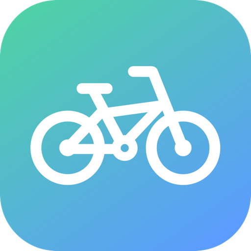
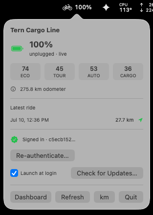
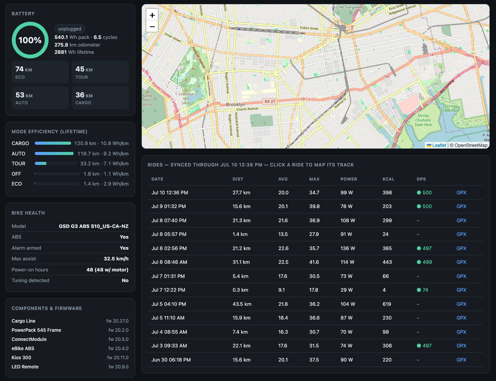

Your eBike's battery, range and rides — live in your Mac's menu bar.
git clone https://github.com/digitalhen/bosch-bar.git


The bundled web dashboard — efficiency, bike health, firmware and ride maps.
Charge level in your menu bar, range per assist mode, and a countdown to full while charging.
Native notifications for battery full or low, charging started or stopped, and completed rides.
Per-mode efficiency, bike health, firmware inventory and a metric-colored ride map with GPX export.
A local REST API, a zero-dependency CLI and event webhooks — for wiring your bike into anything else.